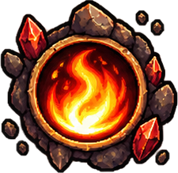

<!doctype html><html lang="ru"><meta charset="utf-8"><meta name="viewport" content="width=device-width,initial-scale=1,maximum-scale=1,user-scalable=no"><title>Goblin Gold Rush · Пепельная жила</title><link rel="icon" href="data:,"><link rel="stylesheet" href="style.css"><main id="game"><canvas id="c"></canvas><header id="hud"><div><small>GOBLIN GOLD RUSH</small><strong id="health">♥ 100</strong><div class="meter"><i id="hpbar"></i></div></div><div class="chapter"><small>ГЛАВА I · ПЕПЕЛЬНАЯ ЖИЛА</small><div class="route"><i id="progress"></i><b style="left:30%">◆</b><b style="left:65%">◆</b><b style="left:97%">♛</b></div></div><div class="wealth"><strong id="gold">◈ 0</strong><small id="build">ТЕСАК · УРОВЕНЬ 1</small></div></header><div id="boss"></div><div id="notice"></div><footer><span id="hint">ТАП — ПРЫЖОК <em>·</em> УДЕРЖАНИЕ — ВЫШЕ</span><span id="xp"></span><button id="fury" aria-label="Активировать ярость"><span>ЯРОСТЬ <b id="charge">0%</b></span></button><button id="pause" aria-label="Пауза">Ⅱ</button></footer><section id="overlay"><div id="modal"></div></section><div id="rotate">Поверните устройство горизонтально</div><div id="dev" hidden></div></main><script src="gl.js"></script><script src="assets.js"></script><script src="sim.js"></script><script src="scene.js"></script></html>
